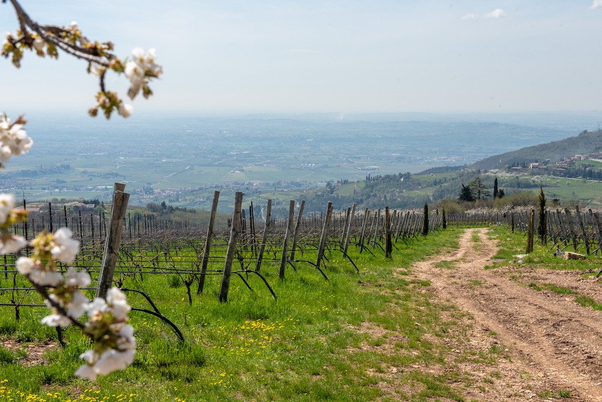
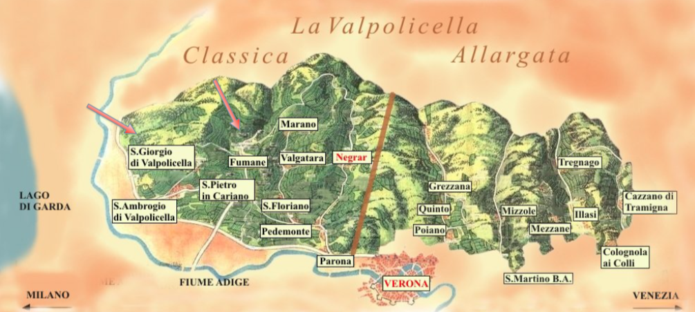
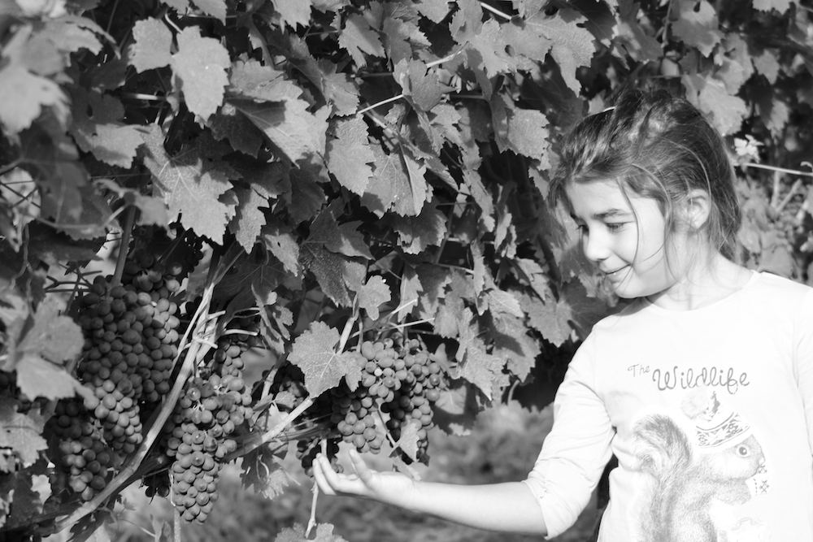

Stay close to excellent wines, they have the solution for every problem

Azienda
CESCHI-BRUGNOLI è un’azienda a conduzione familiare che nasce nel 2009 dalla profonda passione per il territorio e per la viticoltura sostenibile che, da quando siamo nati, ci ha avvolto in tutta la sua eleganza e la sua dolcezza ma ci ha anche insegnato l’attesa e la durezza del lavoro.

Valpolicella
La nostra azienda si sviluppa su quasi 6 ettari distribuiti in vari appezzamenti nella Valpolicella Classica tra i comuni di Sant’Ambrogio di Valpolicella e di Fumane, tra la città di Verona ed il Lago di Garda.
Vigneti
I vigneti sono coltivati a guyot con una media di circa 4500 ceppi per ettaro e sono tutti situati in collina tra i 240 ed i 590 mt s.l.m.

Rispetto
Conduciamo da sempre un’agricoltura rispettosa dell’ambiente senza uso di diserbo chimico e facciamo particolare attenzione a preservare la biodiversità del territorio.
Cantina
La cantina è al momento in restauro. Si prevede una conclusione dei lavori per fine 2020.